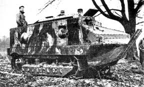

The Schneider CA1 was France’s first operational tank, entering service in April 1917 during World War I. It was developed in response to the stalemate of trench warfare and was intended to support infantry assaults by destroying barbed wire and machine-gun nests. The Schneider was based on a tracked artillery tractor chassis, which influenced its short, boxy design. While overshadowed by later designs like the Renault FT, the Schneider CA1 was a significant step in tank development and marked France’s first attempt at battlefield armor support.

- Characteristics:
- Type: Medium/Assault tank
- Weight: 13.5tons
- Crew: 6
- Armament: 75mm Blockhaus-Schneider gun; 2 x 8mm Hotchkiss machine guns
- Speed: 8 km/h